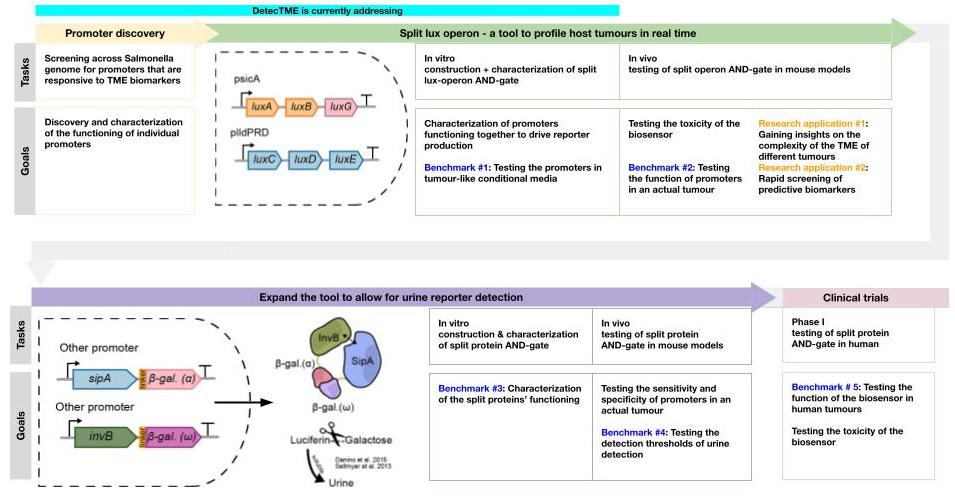

detecTME


Background
1) Immunotherapy is a type of cancer treatment that activates the body’s native immune system to target and fight the tumor. It is extremely effective in certain patients and tumour types, and is quickly becoming a core treatment for some cancers.
2) Despite this, only 20-40% patients respond to immunotherapy due to differences between tumors and individuals.
3) There is an urgent need to predict which patients are likely to benefit from immunotherapy, to avoid unnecessary cost, toxic side effects, and delay of other treatments.
Objectives
We want to create a bacterial platform that can report on tumor immune status in-vivo, and generate a reporter that can be easily retrieved in blood or urine.
Vision
1) Few signaling pathways in bacteria are known to respond to human biomarkers. To ensure that our tool would be able to detect relevant biomarkers in the TME, we designed a functional screening platform to find promoters responsive to our biomarkers of interest. This is our promoter discovery pillar.
2) Better characterization of tumour upon treatment will aid in the search for predictive biomarkers for therapy outcome. and it would aid in search for predictive biomarkers. This is our tumour microenvironment (TME) profiling pillar.
3) Finally, to ensure a relatively convenient diagnostic platform, we designed a workflow to detect immune biomarkers in vivo and release reporters that can be recovered in urine. This approach would reduce costs and suffering relative to other approaches, and is our urine detection pillar.
System Design & Long Term Visions
Our tool will mainly be used by cancer researchers and further downstream in physicians and cancer patients undergoing treatment. As such, we broke down the user cases into research scenarios and patients.
Deliverables
Project website: https://2021.igem.org/Team:British_Columbia
Presentation: https://video.igem.org/w/2hDdbuj9PZgFTwfdKQNJos
Presentations
International Genetically Engineered Machine Competition. iGEM foundation. Online. October 2021. [oral]